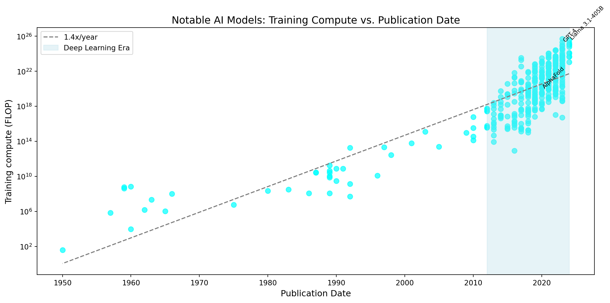
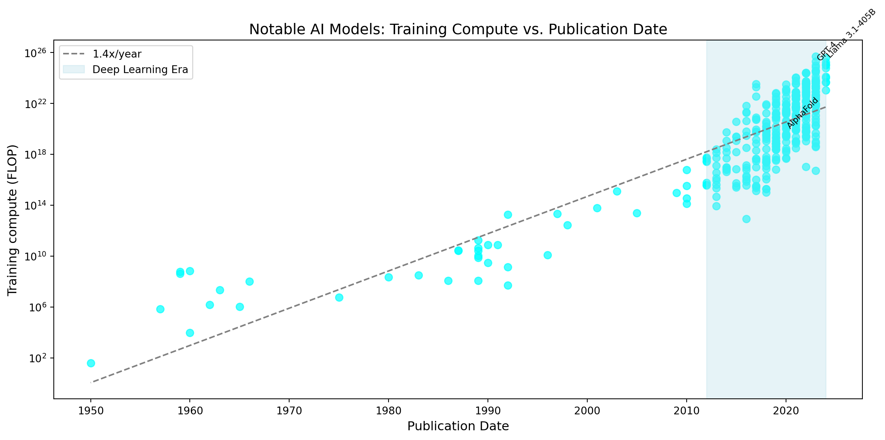
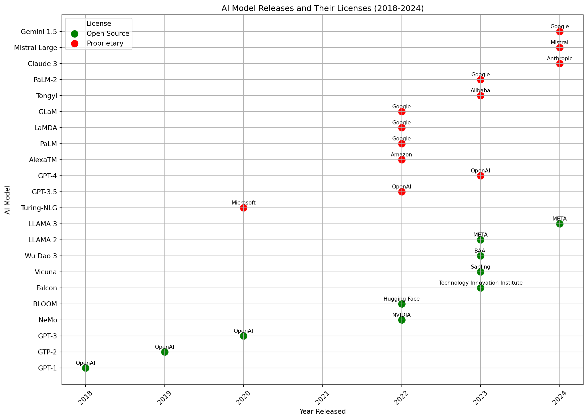
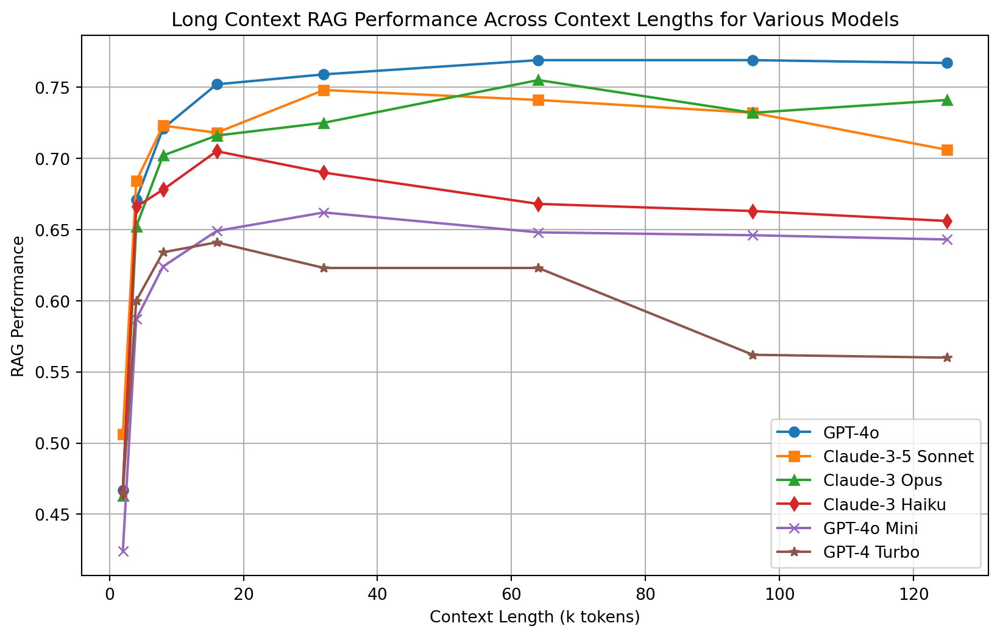
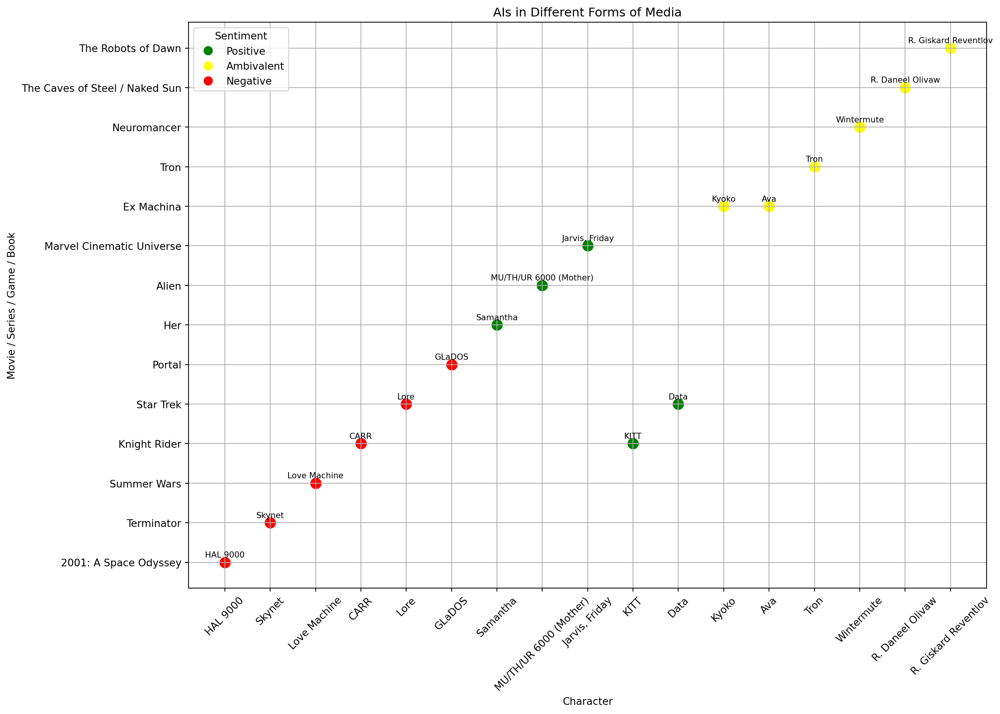

growth_compute_chart()
How can AI interfaces enable/help/encourage sustainability?
The fact that AI systems work so well is proof that we live in a measurable world. The world is filled with structures: nature, cultures, languages, human interactions - all form intricate patterns. Computer systems are increasingly capable in their ability copy these patterns into computer models - known as machine learning. As of 2023, 97 zettabytes (and growing) of data was created in the world per year (Soundarya Jayaraman, 2023). Big data is a basic requirement for training AIs, enabling learning from the structures of the world with increasing accuracy. Representations of the real world in digital models enable humans to ask questions about the real-world structures and to manipulate them to create synthetic experiments that may match the real world (if the model is accurate enough). This can be used for generating human-sounding language and realistic images, finding mechanisms for novel medicines as well as understanding the fundamental functioning of life on its deep physical and chemical level (No Priors: AI, Machine Learning, Tech, & Startups, 2023).
In essence, Human Patterns Enable AIs. Already ninety years ago (McCulloch & Pitts, 1943) proposed the first mathematical model of a neural network inspired by the human brain. Alan Turing’s Test for Machine Intelligence followed in 1950. Turing’s initial idea was to design a game of imitation to test human-computer interaction using text messages between a human and 2 other participants, one of which was a human, and the other - a computer. The question was, if the human was simultaneously speaking to another human and a machine, could the messages from the machine be clearly distinguished or would they resemble a human being so much, that the person asking questions would be deceived, unable to realize which one is the human and which one is the machine? (Turing, 1950).
Alan Turing: “I believe that in about fifty years’ time it will be possible to program computers, with a storage capacity of about 109, to make them play the imitation game so well that an average interrogator will not have more than 70 percent chance of making the right identification after five minutes of questioning. … I believe that at the end of the century the use of words and general educated opinion will have altered so much that one will be able to speak of machines thinking without expecting to be contradicted.” - from (Stanford Encyclopedia of Philosophy, 2021)
By the 2010s AI models became capable enough to beat humans in games of Go and Chess, yet they did not yet pass the Turing test. AI use was limited to specific tasks. While over the years, the field of AI had seen a long process of incremental improvements, developing increasingly advanced models of decision-making, it took an increase in computing power and an approach called deep learning, a variation of machine learning (1980s), largely modeled after the neural networks of the biological (human) brain, returning to the idea of biomimicry, inspired by nature, building a machine to resemble the connections between neurons, but digitally, on layers much deeper than attempted before.
“Generating structured data from unstructured inputs is one of the core use cases for AI” Pokrass (2024)
Combining deep learning and reinforcement learning with human feedback (RLHF) enabled to achieve levels of intelligence high enough to beat the Turing test (Kara Manke, 2022; Christiano, 2021; Christiano et al., 2017). OpenAI co-founder John Schulman describes RLHF simply: “the models are just trained to produce a single message that gets high approval from a human reader” (Kara Manke, 2022).
The nature-inspired approach was successful. Innovations such as back-propagation for reducing errors through updating model weights and transformers for tracking relationships in sequential data (for example in sentences), enabled AI models to became increasingly capable (Vaswani et al., 2017; Merritt, 2022). Generative Adversarial Networks*** (GAN), (ADD CITATION, 2016), and Large Language Models (ADD CITATION, 2018), enabled increasingly generalized models, capable of more complex tasks, such as language generation. One of the leading scientists in this field of research, Geoffrey Hinton, had attempted back-propagation already in the 1980s and reminiscents how “the only reason neural networks didn’t work in the 1980s was because we didn’t have have enough data and we didn’t have enough computing power” (CBS Mornings, 2023). (Epoch AI, 2024) reports the growth in computing power and the evolution of more than 800 AI models since the 1950s. Very simply, more data and more computing power means more intelligent models.
growth_compute_chart()
By the 2020s, AI-based models became a mainstay in medical research, drug development, patient care (Leite et al., 2021; Holzinger et al., 2023), quickly finding potential vaccine candidates during the COVID19 pandemic (Zafar & Ahamed, 2022), self-driving vehicles, including cars, delivery robots, drones in the sea and air, as well as AI-based assistants. The existence of AI models has wide implications for all human activities from personal to professional. The founder of the largest chimp-maker NVIDIA calls upon all countries do develop their own AI-models which would encode their local knowledge, culture, and language to make sure these are accurately captured (World Governments Summit, 2024).
OpenAI has researched a wide range of approaches towards artificial general intelligence (AGI), work which has led to advances in large language models(Ilya Sutskever, 2018; AI Frontiers, 2018). In 2020 OpenAI released a LLM called GPT-3 trained on 570 GB of text (Alex Tamkin & Deep Ganguli, 2021) which was adept in text-generation. (Singer et al., 2022) describes how collecting billions of images with descriptive data (for example the descriptive alt text which accompanies images on websites) enabled researchers to train AI models such as stable diffusion for image-generation based on human-language. These training make use of Deep Learning, a layered approach to AI training, where increasing depth of the computer model captures minute details of the world. Much is still to be understood about how deep learning works; the fractal structure of deep learning can only be called mysterious (Sohl-Dickstein, 2024).
Hinton likes to call AI an idiot savant: someone with exceptional aptitude yet serious mental disorder (CBS Mornings, 2023). Large AI models don’t understand the world like humans do. Their responses are predictions based on their training data and complex statistics. Indeed, the comparison is apt, as the AI field now offers jobs for AI psychologists (ADD CITATION), whose role is to figure out what exactly is happening inside the ‘AI brain’. Understading the insides of AI models trained of massive amounts of data is important because they are foundational, enabling a holistic approach to learning, combining many disciplines using languages, instead of the reductionist way we as human think because of our limitations (CapInstitute, 2023).
Standford “thorough account of the opportunities and risks of foundation models” (Bommasani et al., 2021).
Foundation models in turn enabled generative AIs, a class of models which are able to generate many types of tokens, such as text, speech, audio (San Roman et al., 2023; Kreuk et al., 2022), music (Copet et al., 2023; Meta AI, 2023), video, and even complex structures such 3D models and DNA structures, in any language it’s trained on. The advent of generative AIs was a revolution in human-computer interaction as AI models became increasingly capable of producing human-like content which is hard to distinguish from actual human creations. This power comes with increased need for responsibility, drawing growing interest in fields like AI ethics and AI explainability. Generative has a potential for misuse, as humans are increasingly confused by what is computer-generated and what is human-created, unable to separate one from the other with certainty.
The technological leap is great enough for people to start calling it a start of a new era.(Noble et al., 2022) proposes AI has reached a stage of development marking beginning of the 5th industrial revolution, a time of collaboration between humans and AI. Widespread Internet of Things (IoT) sensor networks that gather data analyzed by AI algorithms, integrates computing even deeper into the fabric of daily human existence. Several terms of different origin but considerable overlap describe this phenomenon, including Pervasive Computing (PC) (Rogers, 2022) and Ubiquitous Computing. Similar concepts are Ambient Computing, which focuses more on the invisibility of technology, fading into the background, without us, humans, even noticing it, and Calm Technology, which highlights how technology respects humans and our limited attention spans, and doesn’t call attention to itself. In all cases, AI is integral part of our everyday life, inside everything and everywhere. Today AI is not an academic concept but a mainstream reality, affecting our daily lives everywhere, even when we don’t notice it.
AI responses are probabilistic and need some function for ranking response quality. Achieving higher percentage or correct responses requires oversight which can come in the form of human feedback (human-in-the-loop) - or by using other AIs systems which are deemed to be already well-aligned (termed Constitutional AI by Anthropic) (Bailey, 2023; Bai et al., 2022). Less powerful AIs areFor example META used LLAMA 2 for aligning LLAMA 3.
One approach to reduce the issues with AI is to introduce some function for human feedback and oversight to automated systems. Human involvement can take the form of interventions from the AI-developer themselves as well as from the end-users of the AI system.
There are many examples of combination of AI and human, also known as “human-in-the-loop”, used for fields as diverse as training computer vision algorithms for self-driving cars and detection of disinformation in social media posts (Wu et al., 2023; Bonet-Jover et al., 2023).
Also known as Human-based computation or human-aided artificial intelligence (Shahaf & Amir, 2007; Mühlhoff, 2019)
| App | Category | Use Case |
|---|---|---|
| Welltory | Health | Health data analysis |
| Wellue | Health | Heart arrhythmia detection |
| QALY | Health | Heart arrhythmia detection |
| Starship Robots | Delivery | May ask for human help when crossing a difficult road or other confusing situation |
Even before AIs, as a user of social media, one may be accustomed to interacting with the feed algorithms that provide a personalized algorithmic experience. Algorithms are more deterministic than AI, meaning they would produce more predictable output in comparison AI models. Nonetheless, there are many reports about effects these algorithms have on human psychology (ADD CITATION). Design is increasingly relevant to algorithms, and more specifically to algorithms that affect user experience and user interfaces. When the design is concerned with the ethical, environmental, socioeconomic, resource-saving, and participatory aspects of human-machine interactions and aims to affect technology in a more human direction, it can hope to create an experience designed for sustainability.
Lorenzo, Lorenzo & Lorenzo (2015) underlines the role of design beyond designing as a tool for envisioning; in her words, “design can set agendas and not necessarily be in service, but be used to find ways to explore our world and how we want it to be”. Practitioners of Participatory Design (PD) have for decades advocated for designers to become more activist through action research. This means to influencing outcomes, not only being a passive observer of phenomena as a researcher, or only focusing on usability as a designer, without taking into account the wider context.
Shenoi (2018) argues inviting domain expertise into the discussion while having a sustainable design process enables designers to design for experiences where they are not a domain expert; this applies to highly technical fields, such as medicine, education, governance, and in our case here - finance and sustainability -, while building respectful dialogue through participatory design. After many years of political outcry (ADD CITATION), social media platforms such Facebook and Twitter have begun to shed more light on how these algorithms work, in some cases releasing the source code (Nick Clegg (2023); Twitter (2023)).
AI systems may make use of several algorithms within one larger model. It follows that AI Explainability requires Algorithmic Transparency.
The content on the platform can be more important than the interface. Applications with a similar UI depend on the community as well as the content and how the content is shown to the user.
AIs are non-deterministic, which requires a new set of consideration when designing AI.
The problems of opaqueness creates the field of explainable AI.
“As humans we tend to fear what we don’t understand” is a common sentiment which has been confirmed psychology (Allport, 1979). Current AI-models are opaque ’black boxes’, where it’s difficult to pin-point exactly why a certain decision was made or how a certain expression was reached, not unlike inside the human brain. This line of thought leads me to the idea of AI psychologists, who might figure out the thought patterns inside the model. Research in AI-explainability (XAI in literature) is on the lookout for ways to create more transparency and credibility in AI systems, which could lead to building trust in AI systems and would form the foundations for AI acceptance.
Red-teaming means pushing the limits of LLMs, trying to get them to produce outputs that are racist, false, or otherwise unhelpful.
There’s an increasing number of tools for LLM evaluation:
“Evaluate and Track LLM Applications, Explainability for Neural Networks” (TruEra, 2023; Leino et al., 2018)
“evaluate your Retrieval Augmented Generation (RAG) pipelines, Metrics-Driven Development” Ragas (2023)
LangSmith “developer platform for every step of the LLM-powered application lifecycle, whether you’re building with LangChain or not. Debug, collaborate, test, and monitor your LLM applications.” LangChain (2024)
Tristan Greene (2022): when the quality of AI responses becomes good enough, people begin to get confused.
Bowman (2023) says steering Large Language Models is unreliable; even experts don’t fully understand the inner workings of the models. Work towards improving both AI steerability and AI alignment (doing what humans expect) is ongoing. Liang et al. (2022) believes there’s early evidence it’s possible to assess the quality of LLM output transparently. Cabitza et al. (2023) proposes a framework for quality criteria and explainability of AI-expressions. Khosravi et al. (2022) proposes a framework for AI explainability, focused squarely on education. Holzinger et al. (2021) highlights possible approaches to implementing transparency and explainability in AI models. While AI outperforms humans on many tasks, humans are experts in multi-modal thinking, bridging diverse fields.
Bigger models aren’t necessarily better; rather models need human feedback to improve the quality of responses Ouyang et al. (2022)
The user experience (UX) of AI is a topic under active development by all the largest online platforms. The general public is familiar with the most famous AI helpers, ChatGPT, Apple’s Siri, Amazon’s Alexa, Microsoft’s Cortana, Google’s Assistant, Alibaba’s Genie, Xiaomi’s Xiao Ai, and many others. For general, everyday tasks, such as asking factual questions, controlling home devices, playing media, making orders, and navigating the smart city.
The AI Credibility Heuristic: A Systematic Model explains how… similar to Daniel Kahneman’s book “Thinking, Fast and Slow”.
Slack (2021)
Shin (2020): “user experience and usability of algorithms by focusing on users’ cognitive process to understand how qualities/features are received and transformed into experiences and interaction”
Zerilli, Bhatt & Weller (2022) focuses on human factors and ergonomics and argues that transparency should be task-specific.
Holbrook (2018): To reduce errors which only humans can detect, and provide a way to stop automation from going in the wrong direction, it’s important to focus on making users feel in control of the technology.
Zhang et al. (2023) found humans are more likely to trust an AI teammate if they are not deceived by it’s identity. It’s better for collaboration to make it clear, one is talking to a machine. One step towards trust is the explainability of AI-systems.
Personal AI Assistants to date have we created by large tech companies. Open-Source AI-models open up the avenue for smaller companies and even individuals for creating many new AI-assistants.
| App | Features |
|---|---|
| socratic.org | Study buddy |
| youper.ai | Mental health helper |
| fireflies.ai | Video call transcription |
| murf.ai | Voice generator |
Responsible AI Seeks to Mitigate Generative AIs’ Known Issues.
Given the widespread use of AI and its increasing power of foundational models, it’s important these systems are created in a safe and responsible manner. While there have been calls to pause the development of large AI experiments (Future of Life Institute, 2023) so the world could catch up, this is unlikely to happen. There are several problems with the current generation of LLMs from OpenAI, Microsoft, Google, Nvidia, and others.
Anthropic responsible scaling policy (Anon, 2023a)
METR – Model Evaluation & Threat Research incubated in the Alignment Research Center (Anon, 2023d).
(Christiano, 2023) believes there are plenty of ways for bad outcomes (existential risk) even without extinction risk.
| Problem | Description |
| Monolithicity | LLMs are massive monolithic models requiring large amounts of computing power for training to offer multi-modal capabilities across diverse domains of knowledge, making training such models possible for very few companies. Liu et al. (2023) proposes future AI models may instead consist of a number networked domain-specific models to increase efficiency and thus become more scalable. |
| Opaqueness | LLMs are opaque, making it difficult to explain why a certain prediction was made by the AI model. One visible expression of this problem are hallucinations, the language models are able to generate text that is confident and eloquent yet entirely wrong. Jack Krawczyk, the product lead for Google’s Bard (now renamed to Gemini): “Bard and ChatGPT are large language models, not knowledge models. They are great at generating human-sounding text, they are not good at ensuring their text is fact-based. Why do we think the big first application should be Search, which at its heart is about finding true information?” |
| Biases and Prejudices | AI bias is well-documented and a hard problem to solve (Liang et al., 2023). Humans don’t necessarily correct mistakes made by computers and may instead become “partners in crime” (Krügel, Ostermaier & Uhl, 2023). People are prone to bias and prejudice. It’s a part of the human psyche. Human brains are limited and actively avoid learning to save energy. These same biases are likely to appear in LLM outputs as they are trained on human-produced content. Unless there is active work to try to counter and eliminate these biases from LLM output, they will appear frequently. |
| Missing Data | LLMs have been pre-trained on massive amounts of public data, which gives them the ability for for reasoning and generating in a human-like way, yet they are missing specific private data, which needs to be ingested to augment LLMs ability to respond to questions on niche topics (Liu, 2022). |
| Data Contamination | Concerns with the math ability of LLMs. “performance actually reflects dataset contamination, where data closely resembling benchmark questions leaks into the training data, instead of true reasoning ability” Zhang et al. (2024) |
| Lack of Legislation | Anderljung et al. (2023) OpenAI proposes we need to proactively work on common standards and legislation to ensure AI safety. It’s difficult to come up with clear legislation; the U.K. government organized the first AI safety summit in 2023 Browne (2023). |
In 2024, OpenAI released its “Model Spec” to define clearly their approach to AI safety with the stated intention to provide clear guidelines for the RLHF approach. OpenAI (2024c)
OpenAI does not yet understand how the internal of an neural network work; they are developing tools to represent NNs concepts for humans (OpenAI, 2024a; Gao et al., 2024).
AI co-founder launches AI Safety Superalignment (Jan Leike & Ilya Sutskever, 2023).
OECD defines AI incident terms Anon (2024b)
Foundation data-sets such as LAION-5B (Romain Beaumont, 2022; Schuhmann et al., 2022)
Knowing Machines
AI acceptance is incumbent on traits that are increasingly human-like and would make a human be acceptable: credibility, trustworthiness, reliability, dependability, integrity, character, etc.
The debate between Open Source v.s. Closed-Source AI is ongoing. Historically open-source has been useful for finding bugs in code as more pairs of eyes are looking at the code and someone may see a problem the programmers have not noticed. Proponents of closed-source development however worry about the dangers or releasing such powerful technology openly and the possibility of bad actors such as terrorists, hackers, violent governments using LLMs for malice. The question whether closed-sourced or open-sourced development will be lead to more AI safety is one of the large debates in the AI industry. In any case, open or closed-sourced, real-world usage of LLMs may demonstrate the limitations and edge-cases of AI. Hackathons such as (Pete, 2023) help come up with new use-cases and disprove some potential ideas.
| AI Model | Released | Company | License | Country |
|---|---|---|---|---|
| GPT-1 | 2018 | OpenAI | Open Source | U.S. |
| GTP-2 | 2019 | OpenAI | Open Source | U.S. |
| Turing-NLG | 2020 | Microsoft | Proprietary | U.S. |
| GPT-3 | 2020 | OpenAI | Open Source | U.S. |
| GPT-3.5 | 2022 | OpenAI | Proprietary | U.S. |
| GPT-4 | 2023 | OpenAI | Proprietary | U.S. |
| AlexaTM | 2022 | Amazon | Proprietary | U.S. |
| NeMo | 2022 | NVIDIA | Open Source | U.S. |
| PaLM | 2022 | Proprietary | U.S. | |
| LaMDA | 2022 | Proprietary | U.S. | |
| GLaM | 2022 | Proprietary | U.S. | |
| BLOOM | 2022 | Hugging Face | Open Source | U.S. |
| Falcon | 2023 | Technology Innovation Institute | Open Source | U.A.E. |
| Tongyi | 2023 | Alibaba | Proprietary | China |
| Vicuna | 2023 | Sapling | Open Source | U.S. |
| Wu Dao 3 | 2023 | BAAI | Open Source | China |
| LLAMA 2 | 2023 | META | Open Source | U.S. |
| PaLM-2 | 2023 | Proprietary | U.S. | |
| Claude 3 | 2024 | Anthropic | Proprietary | U.S. |
| Mistral Large | 2024 | Mistral | Proprietary | France |
| Gemini 1.5 | 2024 | Proprietary | U.S. | |
| LLAMA 3 | 2024 | META | Open Source | U.S. |
| AFM | 2024 | Apple | Proprietary | U.S. |
| Viking 7B | 2024 | Silo | Open Source | Finland |
| GPT-5 | 202? | OpenAI | Unknown; trademark registered | U.S. |
models_chart()
The proliferation of different models enables comparisons of performance based on several metrics from accuracy of responses to standardized tests such as GMAT usually taken my humans to reasoning about less well defined problem spaces. (Chiang et al., 2024; lmsys.org, 2024) open-source AI-leaderboard project has collected over 500 thousand human-ranking of outputs from 82 large-language models, evaluating reasoning capabilities, which currently rate GPT-4 and Claude 3 Opus as the top-performers. (Zellers et al., 2019)’s HellaSwag paper is also accompanied by a leaderboard website (still being updated after publication) listing AI model performance most recent entry April 16, 2024).
Scaling laws of LLMs Kaplan et al. (2020)
English is over-represented in current models so Finnish Anon (2024d) focuses on Nordic languages.
Metacognition – Claude 3 is the first model capable of it?, like the zero waste workshop training guidebook.
Metacognition defined as knowing about knowing (Anon, 1994) or “keeping track of your own learning” (Zero Waste Europe et al., 2022).
Dwarkesh Patel (2024) META open-sourced the largest language model (70 billion parameters) which with performance rivaling several of the proprietary models.
Image-generation is now fast it’s possible to create images in real-time while the user is typing Dwarkesh Patel (2024)
Measuring Massive Multitask Language Understanding (MMLU) Hendrycks et al. (2020).
Another important metric is Retrieval Augmented Generation (RAG) performace. Generative AI applications retrieve data from unstructured external sources in order to augment LLMs existing knowledge with current information (Leng et al., Mon, 08/12/2024 - 19:46).
models_rag_performance()
Rosalind Picard is the founder of the affective computing field. Her pioneering work aims to make computers more human-friendly. Because of the conversational nature of LLMs, they are very useful for affective computing, an approach to recognizing human emotions with machines and providing users experiences that take human emotion into account (Picard, 1997).
Just as LLMs, affective computing relies on input data. It’s not an overstatement to say data from all the processes around us will define the future of computing as HIITTV (2021b) puts it. In the early examples, electrodermal activity of the skin and heart-rate variance data were used to detect the emotional state and stress level of the user (Zangróniz et al., 2017; Velmovitsky et al., 2022). This technology has since become mainstream in products such as Fitbit and the Apple Watch among many others.
Affective Design emerged from affective computing with a focus on understanding user emotions to design UI/UX to which elicits specific emotional responses (Reynolds, 2001).
Apple Watch features Fall Detection which I’ve experienced personally. Riding my bicycle to the NCKU library I slipped and landed on my stomach on the pavement. Watch immediately asked me: “It looks like you’ve taken a hard fall” and offered an option to call the ambulance. Fortunately I was OK but if I did need assistance, this AI algorithm delivered contextual help which could save my health.
On the output side, Lv et al. (2022) studies the effect of cuteness of AI apps on users and found high perceived cuteness correlated with higher willingness to use the apps, especially for emotional tasks.
Since the first mainframe computers with rudimentary computers able to respond with text messages, humans have been drawn to discussing their private lives with a machine that doesn’t judge you like a human could. A famous anecdote is about the lab assistant of the Joseph Weizenbaum MIT ELIZA project in the mid-1960s (1996), who would dedicate extended time to talking to the machine in private. The machine was called DOCTOR and emulated a Rogerian psychotherapist, person-centered therapy developed by Carl Rogers, from the core idea that positive psychological functioning is a inherently human motivation (Bassett, 2019; Rogers, 1995).
Natural language generation exists since Eliza
High quality conversations are somewhat magical in that they can establish trust and build rapport which humans.
(Celino & Re Calegari, 2020) found in testing chatbots for survey interfaces that “[c]onversational survey lead to an improved response data quality.”
Conversational AI
There are noticeable differences in the quality of the LLM output, which increases with model size. Levesque, Davis & Morgenstern (2012) developed the Winograd Schema Challenge, looking to improve on the Turing test, by requiring the AI to display an understanding of language and context. The test consists of a story and a question, which has a different meaning as the context changes: “The trophy would not fit in the brown suitcase because it was too big” - what does the it refer to? Humans are able to understand this from context while a computer models would fail. Even GPT-3 still failed the test, but later LLMs have been able to solve this test correctly (90% accuracy) Kocijan et al. (2022). This is to say AI is in constant development and improving it’s ability to make sense of language.
ChatGPT is the first user interface (UI) built on top of GPT-4 by OpenAI and is able to communicate in a human-like way - using first-person, making coherent sentences that sound plausible, and even - confident and convincing. Wang (2023) ChatGPT reached 1 million users in 5 days and 6 months after launch has 230 million monthly active users. While it was the first, competing offers from Google (Gemini), Anthrophic (Claude), Meta (Llama) and others quickly followed starting a race for best performance across specific tasks including standardized tests from math to science to general knowledge and reasoning abilities.
OpenAI provides AI-as-a-service through its application programming interfaces (APIs), allowing 3rd party developers to build custom UIs to serve the specific needs of their customer. For example Snapchat has created a virtual friend called “My AI” who lives inside the chat section of the Snapchat app and helps people write faster with predictive text completion and answering questions. The APIs make state-of-the-art AI models easy to use without needing much technical knowledge. Teams at AI-hackathons have produced interfaces for problems as diverse as humanitarian crises communication, briefing generation, code-completion, and many others. For instance, (Unleash, 2017) used BJ Fogg’s tiny habits model to develop a sustainability-focused AI assistant at the Danish hackathon series Unleash, to encourage behavioral changes towards maintaining an aspirational lifestyle, nudged by a chatbot buddy.
ChatGPT makes it possible to evaluate AI models just by talking, i.e. having conversations with the machine and judging the output with some sort of structured content analysis tools. Cahan & Treutlein (2023) have conversations about science with AI. Pavlik (2023) and Brent A. Anders (2022/2023) report on AI in education. (Kecht et al., 2023)] suggests AI is even capable of learning business processes.
Humans are multi-modal creatures by birth. To varied ability, we speak, see, listen using our biological bodies. AIs are becoming multi-modal by design to be able to match all the human modes of communication.
By early 2024, widely available LLMs front-ends such as Gemini, Claude and ChatGPT have all released basic features for multi-modal communication. In practice, this means combination several AI models within the same interface. For example, on the input side, one model is used for human speech or image recognition which are transcribed into tokens that can be ingested into an LLM. On the output side, the LLM can generate instructions which are fed into an image / audio generation model or even computer code which can be ran on a virtual machine and then the output displayed inside the conversation.
The quality of LLM output depends on the quality of the provided prompt. Zhou et al. (2022) reports creating an “Automatic Prompt Engineer” which automatically generates instructions that outperform the baseline output quality by using another model in the AI pipeline in front of the LLM to enhance the human input with language that is known to produce better quality. This approach however is a moving target as foundational models keep changing rapidly and the baseline might differ from today to 6 months later.
Multimodal model development is also ongoing. In the case of Google’s Gemini 1.5 Pro, one model is able to handle several types of prompts from text to images. Multimodal prompting however requires larger context windows, as of writing, limited to 1 million tokens in a private version allows combining text and images in the question directed to the AI, used to reason in examples such as a 44-minute Buster Keaton silent film or Apollo 11 launch transcript (404 pages) Google (2024).
Literature delves into human-AI interactions on almost human-like level discussing what kind of roles can the AIs take. (Seeber et al., 2020) proposes a future research agenda for regarding AI assistants as teammates rather than just tools and the implications of such mindset shift.
From Assistance to Collaboration
It’s not only what role the AI takes but how that affects the human. As humans have ample experience relating to other humans and as such the approach towards an assistants vs a teammate will vary. One researcher in this field Karpus et al. (2021) is concerned with humans treating AI badly and coins the term “algorithm exploitation”.
Just as humans, AIs are continuously learning. Ramchurn, Stein & Jennings (2021) discusses positive feedback loops in continually learning AI systems which adapt to human needs.
Context of Use, Where is the AI used? (Schoonderwoerd et al., 2021) focuses on human-centered design of AI-apps and multi-modal information display. It’s important to understand the domain where the AI is deployed in order to develop explanations. However, in the real world, how feasible is it to have control over the domain? Calisto et al. (2021) discusses multi-modal AI-assistant for breast cancer classification.
Voice has a visceral effect on the human psyche; since birth we recognize the voice of our mother. The voice of a loved one has a special effect. Voice is a integral part of the human experience. Machines that can use voice in an effective way are closer to representing and affecting human emotions.
Voice assistants such as Apple’s Siri and Amazon’s Alexa are well-known examples of AI technology in the world. Amazon’s Rohit Prasad thinks it can do so much more, “Alexa is not just an AI assistant – it’s a trusted advisor and a companion” (Prasad, 2022).
Some research suggests that voice UI accompanied by a physical embodied system is the preffered by users in comparison with voice-only UI (Celino & Re Calegari, 2020). This suggests adding an avatar to the AI design may be worthwhile.
There’s evidence across disciplines about the usefulness of AI assistants:
Artificial intelligence user experience (AI UX)
The promise of Generative User Interfaces (GenUI) is to dynamically provide an interface appropriate for the particular user and context.
Data-Driven Design Enables Generative User Interfaces (GenUI)
influences UI design patterns Joyce (2024)
Generative AIs Enable New UI Interactions
The advances in the capabilities of LLMs makes it possible to achieve user experience (UX) which previously was science fiction.
The history of intelligent interfaces is long (Kobetz, 2023)
There’s wide literature available describing human-AI interactions across varied scientific disciplines. While the fields of application are diverse, some key lessons can be transferred horizontally across fields of knowledge.
| Field of Usage | Description |
|---|---|
| Shipping | Veitch & Andreas Alsos (2022) highlights the active role of humans in Human-AI interaction is autonomous self-navigating ship systems. |
| Data Summarizaton | AI is great at summarizing and analyzing data (Peters, 2023; Tu et al., 2023) |
| Childcare | Generate personalized bedtime stories |
| Design Tools | Anon (2024a) |
Crompton (2021) highlights AI as decision-support for humans while differentiating between intended and unintended influence on human decisions.
Cheng et al. (2022) describes AI-based support systems for collaboration and team-work.
Effective Accelerationism (often shortened to E\acc) boils down to the idea that “the potential for negative outcomes shouldn’t deter rapid advancement”
effects of unemployment on mental health. Dew, Penkower & Bromet (1991); Susskind (2017); Anton Korinek (2023)
There are many ways to structure design theory. For the purposes of this AI-focused research, I will begin from Generative UI.
structure: data-driven design, generative UI
AI is able to predict what kind of UI would the user need right now, based on the data and context.
Replit, a startup known for allowing user build apps in the web browser, released Openv0, a framework of AI-generated UI components (Replit, 2023). “Components are the foundation upon which user interfaces (UI) are built, and generative AI is unlocking component creation for front-end developers, transforming a once arduous process, and aiding them in swiftly transitioning from idea to working components.”
Vercel introduced an open-source prototype UI-generator called V0 which used large language models (LLMs) to create code for web pages based on text prompts (Vercel, 2023). Other similar tools quickly following including Galileo AI, Uizard AutoDesigner and Visily (Anon, 2024e).
In 2014, the eminent journal Information Sciences decided to dedicate a special section to AI-generated software to call attention to this tectonic shift in software development (Reformat, 2014).
As machines become more capable, machines will eventually be capable of producing machines.
Generative UIs are largely invented in practice, based on user data analysis and experimentation, rather than being built in theory. Kelly Dern, a Senior Product Designer at Google lead a workshop in early 2024 on GenUI for product inclusion aiming to create “more accessible and inclusive [UIs for] users of all backgrounds”.
(Anon, 2023c) gives an overview of the history of generative AI design tools going back in time until 2012 when (Troiano & Birtolo, 2014) proposed genetic algorithms for UI design.
(Fletcher, 2023) and (Joe Blair, 2024) are worried UIs are becoming average; that is more and more similar towards the lowest common denominator. We can generate better ones that are based on user data and would be truly personalized.
(Nielsen, 2024a) recounts how 30 years of work towards usability has largely failed - computers are still not accessible enough (“difficult, slow, and unpleasant”) - and has hope Generative UI could offer a chance to provide levels of accessibility humans could not.
(Matteo Sciortino, 2024) coins the phrase RTAG UIs “real-time automatically-generated UI interfaces” mainly drawing from the example of how his Netflix interface looks different from that of his sisters because of their dissimilar usage patterns.
(Anon, 2024c) Meanwhile is very critical because for the following reasons:
(Feifei Liu 刘菲菲, n.d.) ChatGPT is using buttons to explain context.
Nielsen (2024b) information scent from Information Foraging theory (Pirolli & Card, 1999).
| Problem | Description |
|---|---|
| Low predictability | Does personalization mean the UI keeps changing? |
| High carbon cost | AI-based personalization is computation-intensive |
| Surveillance | Personalization needs large-scale data capture |
What is the user interface of the green transformation?
McKeough (2018) business consultancies have begun to recognize the importance of design to business. They advise their corporate clients to bring user experience design to the core of their business operations.
There’s a number of user interface design patterns that have provide successful across a range of social media apps. Such user experience / user interface (UX/UI) patterns are copied from one app to another, to the extent that the largest apps share a similar look and feature set. Common UX/UI parts include the Feed and Stories. By using common UI parts from social media users have an easier time to accept the innovative parts. add Viz charts. Avatars are increasingly common and new generations are used to talking to computers.
| Feature | Examples | |
|---|---|---|
| Feed | ||
| Post | Apple App Store | |
| Stories | IG, FB, WhatsApp, SnapChat, TikTok | |
| Comment | ||
| Reactions |
There are also more philosophical approaches to Interface Studies: David Hoang (2022), the head of product design at Webflow, suggests taking cues from art studies to isolate the core problem: “An art study is any action done with the intention of learning about the subject you want to draw”. As a former art student, Hoang looks at an interface as “a piece of design is an artwork with function”.
Indeed, art can be a way to see new paths forward, practicing “fictioning” to deal with problematic legacies: Anon (2023h)
Today’s machines are much more capable so it’s not a surprise humans would like to talk to them. One example is AI Friend is Replika, a computer model trained to be your companion in daily life. (Jiang, Zhang & Pian, 2022) describes how Replika users in China using in 5 main ways, all of which rely on empathy. The company’s CEO insists it’s not trying to replace human relationship but to create an entirely new relationship category with the AI companion; there’s value for the users in more realistic avatars, integrating the experience further into users’ daily lives through various activities and interactions (Patel, 2024).
| How humans express empathy towards the Replika AI companion |
|---|
| Companion buddy |
| Responsive diary |
| Emotion-handling program |
| Electronic pet |
| Tool for venting |
Jakob Nielsen notes two recent studies suggesting human deem AI-generated responses more empathetic than human responses, at times by a significant marring; however telling users the response is AI-generated reduces the perceived empathy (Nielsen, 2024c; Ayers et al., 2023; Yin, Jia & Wakslak, 2024)
Usability sets the baseline but AI-interfaces are capable of more.
AI UX
Privacy UX Jarovsky (2022b)
AI UX dark patterns Jarovsky (2022a)
AI is usually a model that spits out a number between 0 and 1, a probability score or prediction. UX is what we do with this number.
Bailey (2023) believes people will increasingly use AI capabilities through UIs that are specific to a task rather than generalist interfaces like ChatGPT.
How do the tenets of user experience (UX) apply to AI?
| UX |
|---|
| Useful |
| Valuable |
| Usable |
| Acessible |
| Findable |
| Desirable |
| Credible |
Gupta (2023) proposes 3 simple goals for AI:
| 1 | 2 | 3 |
|---|---|---|
| Reduce the time to task | Make the task easier | Personalize the experience for an individual |
Usability Guidelines
Microsoft Co-Founder predicted in 1982 “personal agents that help us get a variety of tasks” (Bill Gates, 1982) and it was Microsoft that introduced the first widely available personal assistant in 1996, called Clippy, inside the Microsoft Word software. Clippy was among the first assistants to reach mainstream adoption, helping users not yet accustomed to working on a computer, to get their bearings (Tash Keuneman, 2022). Nonetheless, it was in many ways useless and intrusive, suggesting there was still little knowledge about UX and human-centered design. Gates never wavered though and is quoted in 2004 saying “If you invent a breakthrough in artificial intelligence, so machines can learn, that is worth 10 Microsofts” Lohr (2004).
Gates updated his ideas in 2023 focuses on the idea of AI Agents (Gates, 2023).
As late as in 2017, scientists were trying to create a program with enough natural-language understanding to extract basic facts from scientific papers Stockton (2017)
Might we try again?
With the advent of ChatGPT, the story of Clippy has new relevance as part of the history of AI Assistants. Benjamin Cassidy (2022) and Abigail Cain (2017) illustrate beautifully the story of Clippy and Tash Keuneman (2022) ask poignantly: “We love to hate Clippy — but what if Clippy was right?”
Many researchers have discussed the user experience (UX) of AI to provide usability guidelines.
Microsoft provides guidelines for Human-AI interaction (Li et al. (2022); Amershi et al. (2019)) which provides useful heuristics categorized by context and time.
| Context | Time |
|---|---|
| Initially | |
| During interaction | |
| When wrong | |
| Over time |
Combi et al. (2022) proposes a conceptual framework for XAI, analysis AI based on Interpretability, Understandability, Usability, and Usefulness.
Zimmerman et al. (2021) “UX designers pushing AI in the enterprise: a case for adaptive UIs”
Anon (2021c) “Why UX should guide AI”
Simon Sterne (2023) UX is about helping the user make decisions
Dávid Pásztor (2018)
Anderson (2020)
Lennart Ziburski (2018) UX of AI
Stephanie Donahole (2021)
Lexow (2021)
Dávid Pásztor (2018) AI UX principles
Bubeck et al. (2023) finds ChatGPT passes many exams meant for humans.
Suen & Hung (2023) discusses AI systems used for evaluating candidates at job interviews
Wang et al. (2020) propose Neuroscore to reflect perception of images.
Su & Yang (2022) and Su, Ng & Chu (2023) review papers on AI literacy in early childhood education and finds a lack of guidelines and teacher expertise.
Yang (2022) proposes a curriculum for in-context teaching of AI for kids.
Eric Schmidt & Ben Herold (2022) audiobook
Akshay Kore (2022) Designing Human-Centric AI Experiences: Applied UX Design for Artificial Intelligence
Anon (2018) chatbot book
Tom Hathaway & Angela Hathaway (2021) chatbot book
Lew & Schumacher (2020) AI UX book
AI IXD is about human-centered seamless design
Storytelling
Human-computer interaction (HCI) has a long storied history since the early days of computing when getting a copy machine to work required specialized skill. Xerox Sparc lab focused on early human factors work and inspired a the field of HCI to make computer more human-friendly.
Soleimani (2018): UI patterns for AI, new Section for Thesis background: “Human-Friendly UX For AI”?
Discuss what is UX for AI (per prof Liou’s comment), so it’s clear this is about UX for AI
What is Personalized AI?
Many large corporations have released guidelines for Human-AI interaction. Mikael Eriksson Björling & Ahmed H. Ali (n.d.) Ericcson AI UX.
Google’s AI Principles and provides Google’s UX for AI library (Josh Lovejoy, n.d.; Google, n.d.). In Design Portland (2018), Lovejoy, lead UX designer at Google’s people-centric AI systems department (PAIR), reminds us that while AI offers need tools, user experience design needs to remain human-centered. While AI can find patterns and offer suggestions, humans should always have the final say.
Harvard Advanced Leadership Initiative (2021)
VideoLecturesChannel (2022) “Communication in Human-AI Interaction”
Haiyi Zhu & Steven Wu (2021)
Akata et al. (2020)
Dignum (2021)
Bolei Zhou (2022)
ReadyAI (2020)
Vinuesa et al. (2020)
Orozco et al. (2020)
Fitness Guides, AI Guides have been shown to improve sports performance, etc, etc. Can this idea be applied to sustainability? MyFitness Pal, AI training assistant. There’s not avatar.
AI in Medicine, AI has been in medicine since early days with the promise to improve health outcomes.
Human Augmentation, Technology for augmenting human skills or replacing skills that were lost due to an accident is one usage of tech.
AI is being use in high–Stakes Situations (Medical, Cars, Etc).
AI-based systems are being implemented in medicine, where stakes are high raising the need for ethical considerations. Since CADUCEUS in the 1970s (in Kanza et al., 2021), the first automated medical decision making system, medical AI now provides Health Diagnosic Symptoms and AI-assistants in medical imaging. (Calisto et al., 2022) focuses on AI-human interactions in medical workflows and underscores the importance of output explainability. Medical professionals who were given AI results with an explanation trusted the results more. (Lee, Goldberg & Kohane, 2023) imagines an AI revolution in medicine using GPT models, providing improved tools for decreasing the time and money spent on administrative paperwork while providing a support system for analyzing medical data.
Singhal et al. (2023) medial AI reaching expert-level question-answering ability.
Ayers et al. (2023) in an online text-based setting, patients rated answers from the AI better, and more empathetic, than answers from human doctors.
Daisy Wolf & Pande Vijay (2023) criticizes US healthcare’s slow adoption of technology and predicts AI will help healthcare leapfrog into a new era of productivity by acting more like a human assistant.
Eliza Strickland (2023) Chat interface for medical communication
Jeblick et al. (2022) suggest complicated radiology reports can be explained to patients using AI chatbots.
Anon (n.d.e) health app, “Know and track your symptoms”
Anon (n.d.a) AI symptom checker,
Women in AI (n.d.) AI-based health monitoring
Anon (n.d.f) track chronic condition with AI-chat
Stephanie Donahole (2021) AI impact on UX design
Yuan, Zhang & Wang (2022): “AI assistant advantages are important factors affecting the utilitarian/hedonic value perceived by users, which further influence user willingness to accept AI assistants. The relationships between AI assistant advantages and utilitarian and hedonic value are affected differently by social anxiety.”
| Name | Features |
|---|---|
| Charisma | |
| Replika | Avatar, Emotion, Video Call, Audio |
| Siri | Audio |
AI Affects Human-Computer Interactions
The field of Human Factors and Ergonomics (HFE) emphasizes designing user experiences (UX) that cater to human needs (The International Ergonomics Association, 2019). Designers think through every interaction of the user with a system and consider a set of metrics at each point of interaction including the user’s context of use and emotional needs.
Software designers, unlike industrial designers, can’t physically alter the ergonomics of a device, which should be optimized for human well-being to begin with and form a cohesive experience together with the software. However, software designers can significantly reduce mental strain by crafting easy-to-use software and user-friendly user journeys. Software interaction design goes beyond the form-factor and accounts for human needs by using responsive design on the screen, aural feedback cues in sound design, and even more crucially, by showing the relevant content at the right time, making a profound difference to the experience, keeping the user engaged and returning for more. In the words of (Babich, 2019), “[T]he moment of interaction is just a part of the journey that a user goes through when they interact with a product. User experience design accounts for all user-facing aspects of a product or system”.
Drawing a parallel from narrative studies terminology, we can view user interaction as a heroic journey of the user to achieve their goals, by navigating through the interface until a success state - or facing failure. Storytelling has its part in interface design however designing for transparency is just as important, when we’re dealing with the user’s finances and sustainability data, which need to be communicated clearly and accurately, to build long-term trust in the service. For a sustainable investment service, getting to a state of success - or failure - may take years, and even longer. Given such long timeframes, how can the app provide support to the user’s emotional and practical needs throughout the journey?
(Tubik Studio, 2018) argues affordance measures the clarity of the interface to take action in user experience design, rooted in human visual perception, however, affected by knowledge of the world around us. A famous example is the door handle - by way of acculturation, most of us would immediately know how to use it - however, would that be the case for someone who saw a door handle for the first time? A similar situation is happening to the people born today. Think of all the technologies they have not seen before - what will be the interface they feel the most comfortable with?
For the vast majority of this study’s target audience (college students), social media can be assumed as the primary interface through which they experience daily life. The widespread availability of mobile devices, cheap internet access, and AI-based optimizations for user retention, implemented by social media companies, means this is the baseline for young adult users’ expectations (as of writing in 2020).
(Shin, Zhong & Biocca, 2020) proposes the model (fig. 10) of Algorithmic Experience (AX) “investigating the nature and processes through which users perceive and actualize the potential for algorithmic affordance” highlighting how interaction design is increasingly becoming dependent on AI. The user interface might remain the same in terms of architecture, but the content is improved, based on personalization and understanding the user at a deeper level.
In 2020 (when I proposed this thesis topic), Google had recently launched an improved natural language engine to better understand search queries (Anon, 2019), which was considered the next step towards understanding human language semantics. The trend was clear, and different types of algorithms were already involved in many types of interaction design, however, we were in the early stages of this technology (and still are early in 2024). Today’s ChatGPT, Claude and Gemini have no problem understanding human semantics - yet are they intelligent?
Intelligence may be besides the point as long as AI becomes very good at reasoning. AI is a reasoning engine (Shipper, 2023; Bubeck et al., 2023; see Bailey, 2023 for a summary). That general observation applies to voice recognition, voice generation, natural language parsing, among others. Large consumer companies like McDonald’s are in the process of replacing human staff with AI assistants in the drive-through, which can do a better job in providing a personal service than human clerks, for whom it would be impossible to remember the information of thousands of clients. In (Barrett, 2019), in the words of Easterbrook, a previous CEO of McDonald’s “How do you transition from mass marketing to mass personalization?”
What are the next features that could improve the next-generation UX/UI of AI-based assistants?
(Stone Skipper, 2022) sketches a vision of “[AI] blend into our lives in a form of apps and services” deeply ingrained into daily human activity.
Should AIs look anthropomorphic or fade in the background? It’s an open question. Perhaps we can expect a mix of both depending on the context of use and goals of the particular AI.
(Aschenbrenner, 2024) predicts “drop-in virtual coworkers”, AI-agents who are able to use computer systems like a human seamlessly replacing human employees.
| Anthropomorphic AI User Interfaces | Non-Anthropomorphic AI User Interfaces |
|---|---|
| AI wife (Anon, 2023e) | Generative AI has enabled developers to create AI tools for several industries, including AI-driven website builders (Constandse, 2018) |
| (Sarah Perez, 2023) character AI | AI tools for web designers (patrizia-slongo, 2020) |
| Mourning for the ‘dead’ AI (Phoebe Arslanagić-Wakefield, n.d.) | Microsoft Designer allows generating UIs just based on a text prompt (Microsoft, 2023) |
| AI for therapy (Broderick, 2023) | personalized bed-time stories for kids generated by AI (Bedtimestory.ai, 2023) |
| Mental health uses: AI for bullying (Sung, 2023) |
How AIs are represented in popular media shapes the way we think about AI companions. Some stories have AIs both in positive and negative roles, such as Star Trek and Knight Rider. In some cases like Her and Ex Machina, the characters may be complex and ambivalent rather than fitting into a simple positive or negative box. In Isaac Asimov’s books, the AIs (mostly in robot form) struggle with the 3 laws of robotics, raising thought-provoking questions.
AI Assistants in Media Portrayals mostly have some level of anthropomorphism through voice or image to be able to film; indeed, a purely text-based representation may be too boring an un-cinematic.
There have been dozens of AI-characters in the movies, TV-series, games, and (comic) books. In most cases, they have a physical presence or a voice, so they could be visible for the viewers. Some include KITT (Knight Industries Two Thousand).
| Movie / Series / Game / Book | Character | Positive | Ambivalent | Negative |
|---|---|---|---|---|
| 2001: A Space Odyssey | HAL 9000 | X | ||
| Her | Samantha | X | ||
| Alien | MU/TH/UR 6000 (Mother) | X | ||
| Terminator | Skynet | X | ||
| Summer Wars | Love Machine | X | ||
| Marvel Cinematic Universe | Jarvis, Friday | X | ||
| Knight Rider | KITT | X | ||
| CARR | X | |||
| Star Trek | Data | X | ||
| Lore | X | |||
| Ex Machina | Kyoko | X | ||
| Ava | X | |||
| Tron | Tron | X | ||
| Neuromancer | Wintermute | X | ||
| The Caves of Steel / Naked Sun | R. Daneel Olivaw | X | ||
| The Robots of Dawn | R. Giskard Reventlov | X | ||
| Portal | GLaDOS | X |
scifi_chart()
Robo-advisors is a fintech term that was in fashion largely before the arrival of AI assistants and has been thus superseded by newer technologies. Ideally, robo-advisors can be more dynamic than humans and respond to changes to quickly and cheaply. Human advisors are very expensive and not affordable for most consumers. (Capponi, Ólafsson & Zariphopoulou, 2019) argues “The client has a risk profile that varies with time and to which the robo-advisor’s investment performance criterion dynamically adapts”. The key improvement of personalized financial advice is understanding the user’s dynamic risk profile.
In the early days in Europe, Germany and the United Kingdom led the way with the most robo-advisory usage (Cowan, 2018). While Germany had 30+ robot-advisors on the market in 2019, with a total of 3.9 billion EUR under robotic management, it was far less than individual apps like Betterment managed in the US (Bankinghub, 2019). Already in 2017, several of the early robo-advisors apps have shut down in the UK (AltFi, 2017). ETFmatic gained the largest number of downloads by 2017, focusing exclusively on exchange-traded funds (ETFs), tracking stock-market indexes automatically, with much less sophistication, than their US counterparts (AltFi, 2017). The app was bought by a bank in 2021 and closed down in 2023 (AltFi, 2021; Silva, 2023; Anon, 2023b).
Some relevant papers include a comparison of robot advisors by (Barbara Friedberg, 2021) and (Slack, 2021)’s account of how before Generative AI, financial chatbots were developed manually using a painstaking process that was slow and error-prone, for example using the Atura Process. Older financial robo-advisors, built by fintech companies aiming to provide personalized suggestions for making investments such as Betterment and Wealthfront are forced to upgrade their technology to keep up.
The user interface and user experience (UI/UX) of consumer-focused investing apps in Europe has improved a over the past decade. The changing landscape is related to the earlier availability of better quality apps available in the US and the disappearance of the 1st generation of rudimentary investing apps and the lessons learned on how to automate the delivery of financial services while increasing user satisfaction.
In India, research is being conducted on how AI advisors could assist with investors’ erratic behavior in stock market volatility situations, albeit without much success (Bhatia, Chandani & Chhateja, 2020). India had more than 2000 fintechs since 2015 (Migozzi, Urban & Wójcik, 2023).
NeuralNine (2021) Financial AI assistant in Python
David, Resheff & Tron (2021) Can explainable AI help adoption of Financial AI assistants?
Brown (2021) Financial chatbots
Robo-advisors compete with community investing such as hedge funds, mutual funds, copy-trading, and DAOs with treasuries. Robo-Advisor do not have the type of social proof a community-based investment vehicle has. The question is, does the user trust the robot or a human.
While the financial AI companion apps in the US market are ahead globally, they are not yet using many of the user experience innovations that are prevalent on social media platforms targeted at Generation Z and/or Millennials, possibly presenting an opportunity for cross-industry knowledge transfer, from businesses that are traditionally closer to the consumer - such as retailers. Financial AI companion apps have not yet grown to mainstream scale in Asia, Africa, Latin America, and Europe, being for the moment a largely US-based retail investor trend. The apps outside of the US are niche products in a nascent stage, however, they still provide relevant design directions or stories of what to avoid.
Anon (2021b)
Sean McGowan (2018)
ROBIN DHANWANI (2021)
Anon (2021a)
Cordeiro & Weevers (2016)
Ungrammary (2020)
Raha maraton etv investeerimissaade.. raadios on ka mingi saade
Anon (n.d.c): digital assets bank
Anon (2023f) calculate climate cost
Anon (n.d.d)
Hyde (2006) Money as a gift
John Ssenkeezi (2022): Small stock investments
Financial empowerment
Small cash apps like African market Investment Clubs Invest in sustainability with people smarter than myself
Anon (n.d.i)
Qayyum Rajan (2021) ESG pulse
Anon (n.d.h) Network for Greening the Financial System
SmartWealth (2021) How do consumer become investors? marketing materials say: “One of the greatest hurdles to financial independence is a consumer mindset.” One of the greatest hurdles to sustainability is a consumer mindset?
Outlaw (2015)
Malliaris & Salchenberger (1996) (Need to pay for paper!)
Anon (n.d.b) Huawei
Anon (2023i) Personalised portfolios
Anon (n.d.g) Thai finance app
Anon (n.d.j)
Renato Capelj (February 16, 2021 6:47 PM)
This chapter looked at AI in general since its early history and then focused on AI assistants in particular.
| Category | Implication |
|---|---|
| Voice Assistants | There are many distinct ways how an algorithm can communicate with a human. From a simple search box such as Google’s to chatbots, voices, avatars, videos, to full physical manifestation, there are interfaces to make it easier for the human communicate with a machine. |
| Sustainability | While I’m supportive of the idea of using AI assistants to highlight more sustainable choices, I’m critical of the tendency of the above examples to shift full environmental responsibility to the consumer. Sustainability is a complex interaction, where the producers’ conduct can be measured and businesses can bear responsibility for their processes, even if there’s market demand for polluting products. |
| Sustainability | Personal sustainability projects haven’t so far achieved widespread adoption, making the endeavor to influence human behaviors towards sustainability with just an app - like its commonplace for health and sports activity trackers such as Strava (fig. 9) -, seem unlikely. Personal notifications and chat messages are not enough unless they provide the right motivation. Could visualizing a connection to a larger system, showing the impact of the eco-friendly actions taken by the user, provide a meaningful motivation to the user, and a strong signal to the businesses? |
| Machine Learning | All of the interfaces mentioned above make use of machine learning (ML), a tool in the AI programming paradigm for finding patterns in large sets of data, which enables making predictions useful in various contexts, including financial decisions. These software innovations enable new user experiences, providing an interactive experience through chat (chatbots), using voice generation (voice assistants), virtual avatars (adds a visual face to the robot). |
| Character Design | I’m a digital companion, a partner, an assistant. I’m a Replika.” said Replika, a digital companion app via Github CO Pilot, another digital assistant for writing code, is also an example of how AI can be used to help us in our daily lives. |
| Psychology | Humans respond better to humans? |
| Psychology | Humans respond better to machines that into account emotion? |
| Open Source | For public discussion to be possible on how content is displayed, sorted, and hidden, algorithms need to be open source. |
| User Experience | User experience design (AI UX) plays a crucial role in improving the consumer to investing journey. The missed opportunity to provide an even more interactive experience in line with user expectations. |
| LLMs | Prompt engineering findings have significance for “green filter” as it validates the idea of creating advanced prompts for improved responses. For “green filter”, the input would consist of detailed user data + sustainability data for detailed analysis. |
| Cuteness | Cuter apps have higher retention |
| Transparency | Understanding algorithm transparency helps humans to regard the AI as a machine rather than a human |
| Anthropomorphism |
| Plap |